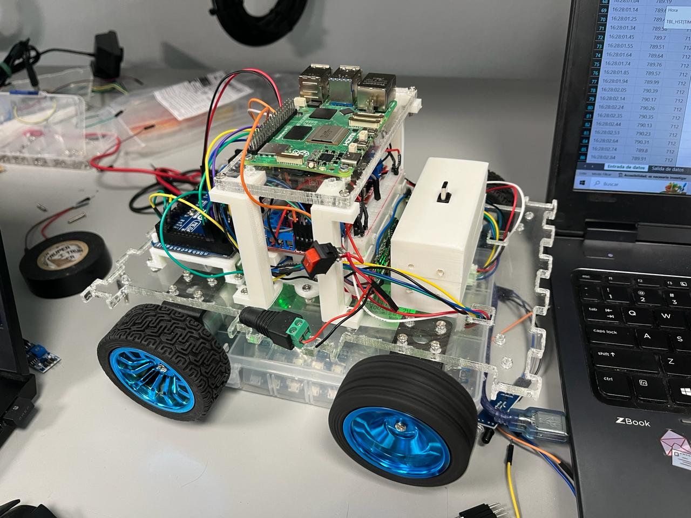
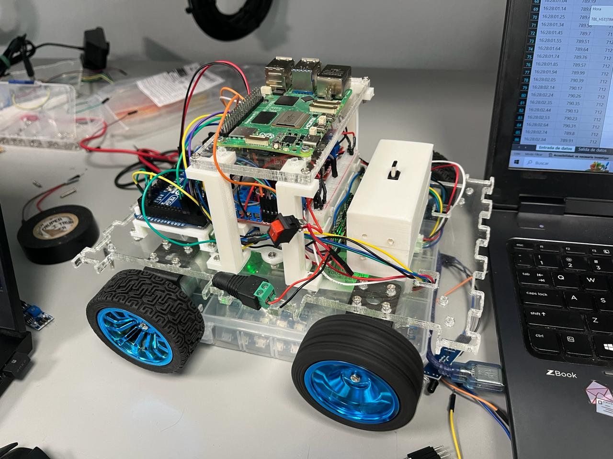

| First Day of Formal Activities |
|---|
| January 08, 2024 |
| We formally started with the activities. On this first day, only a few things were talked about the challenges of the competition, taking into account how we were going to participate in each of them, along with the necessary materials to start with the elaboration of the robot, some of these being: the raspberry, jumpers, necessary sensors, etc. |
| Assembling the prototype |
|---|
| January 09 - January 10, 2024 |
| We started building the robot with a prototype that we already had pre-assembled, with the implementation of the raspberry, the H-bridge, arduino UNO and also with the connections on top of the chassis to complete a base design. |
| First remote-controlled movement |
|---|
| January 11, 2024 |
| With eager anticipation, we began the process of configuring the robot to respond to commands from a PlayStation 4 controller, a versatile tool that promises fluid movement and precise control. The initial steps involved meticulous calibration to ensure seamless interaction between the controller and the robot. We meticulously mapped out the controls, assigning specific functions to each button and joystick. Forward motion, backward traversal, graceful turns, speed modulation – every aspect meticulously crafted to empower our robot with a diverse range of movements. As we delved deeper into the setup, we were struck by the intricacies involved in enabling our creation to respond to our commands with agility and precision. Each adjustment brought us closer to our goal of a seamlessly responsive robotic companion. |
| Line Follower (Lava Palava) |
|---|
| January 15, 2024 |
| Work began on the code to implement the line tracker for the lava palava test of the competition. Using two sensors that for now only detect the color black, however, we realized that it didn't work quite right because we had problems with the position of the sensors, sometimes resulting in them being too low or too high, so the movement of the robot was not smooth. |
| Design Modifications |
|---|
| January 16, 2024 |
| In our quest for optimal performance and efficiency, we embarked on a thorough review and redesign of the wiring layout and sensor placement on our robot. Recognizing the critical role that organization plays in ensuring smooth functionality, we spared no effort in refining every aspect of the setup to achieve a higher degree of order and precision. The first step in this process involved a meticulous examination of the existing wiring configuration and sensor placements. We carefully assessed the strengths and weaknesses of the current setup, identifying areas for improvement and optimization. Armed with insights gained from our analysis, we set out to implement a series of strategic modifications. With precision and care, we restructured the wiring harness, meticulously routing cables and connectors to minimize clutter and maximize accessibility. Each wire was painstakingly positioned to eliminate interference and reduce the risk of tangling, ensuring a streamlined and efficient electrical system. |

| Code Migration, batteries and eco disaster stage |
|---|
| January 18, 2024 |
The migration of the codes that were in the raspberry pi 4 to the raspberry pi 5 began to be carried out, however, problems were found with one of the libraries, which is why it took longer than expected. In the end we found that the error was that the library was no longer supported, so another one had to be implemented.  |

| New robot design |
|---|
| January 19, 2024 |
| "Embarking on the journey of designing our new robot was a thrilling endeavor filled with anticipation and creative energy. With the lessons learned from our previous prototype guiding us, we eagerly delved into the initial phases of conceptualization and planning. The first order of business was to establish a clear approach for our new design. Drawing upon our collective expertise and innovative spirit, we engaged in brainstorming sessions to explore various concepts and strategies. After careful consideration and deliberation, we arrived at a vision that encapsulated our aspirations for the next iteration of our robot. With our vision firmly in place, we set out to translate it into tangible form. Armed with measuring tools and a keen eye for detail, we embarked on the meticulous process of taking measurements to ensure that our robot would meet the size specifications mandated by the competition rules. Every dimension was carefully recorded, every angle meticulously noted, as we sought to strike the perfect balance between size, agility, and functionality. |


| Scenario for "Escape Route" and code migration. |
|---|
| January 22, 2024 |
Embarking on the construction of the 'Escape Route' challenge track was an endeavor filled with creativity and meticulous planning. With the goal of creating an engaging and dynamic obstacle course, we set out to transform ordinary boxes into formidable barriers that would test the agility and problem-solving skills of our robot.
The first step in this process involved carefully selecting the materials for our obstacles. Armed with precision tools and a keen eye for detail, we began by cutting out boxes of varying sizes to serve as the building blocks of our track. Each box was meticulously crafted to ensure uniformity and durability, laying the foundation for the challenges that lay ahead.
With the raw materials in hand, we turned our attention to the artistic aspect of the project. Recognizing the importance of visual cues in guiding our robot through the course, we meticulously painted each box with its corresponding color, adding a vibrant and visually appealing element to the track. Each stroke of the brush was carefully applied, transforming plain cardboard into colorful obstacles that would capture the imagination of spectators and participants alike. 
|
| Second prototype and implementation of batteries |
|---|
| January 24, 2024 |
| The second prototype designed previously was worked on in SolidWorks, cutting the result out of MDF material to obtain our base for the second prototype. Once the base is obtained, we begin with the reconnection of elements, starting with the implementation of the batteries that serve as a source of energy for the motors. |

| Webcam recognition |
|---|
| January 25, 2024 |
| Securing the Raspberry Pi 4 was a significant milestone in our journey towards enhancing the capabilities of our robot. With this powerful computing platform in hand, we wasted no time in initiating a series of preliminary tests to evaluate its performance and compatibility with our system. Our initial focus centered on configuring the Raspberry Pi 4 to interface seamlessly with the webcam, a crucial component that would enable our robot to gather visual data for various tests and tasks. Through meticulous setup and configuration, we ensured that the Raspberry Pi 4 could recognize and interface with the webcam effectively. With the hardware components in place, we embarked on a series of test runs to verify the functionality of the webcam. Capturing a series of photos, we meticulously scrutinized each image to ensure that the webcam was operating correctly and capturing clear, high-quality footage. These test runs served as a crucial validation step, allowing us to confirm that the Raspberry Pi 4 and webcam were functioning harmoniously together. Any issues or discrepancies were addressed promptly, with adjustments made to optimize performance and ensure seamless operation. |


| Implementation of batteries and power bank |
|---|
| January 26, 2024 |
| Embarking on the quest for improved performance and reliability, we initiated a series of rigorous tests to evaluate a new power source for both the motors and the Raspberry Pi, the brain of our robot. Recognizing the critical role that power stability plays in ensuring smooth operation and longevity, we spared no effort in exploring alternatives to enhance our system. The first phase of our testing regimen involved the integration of batteries to power the motors, replacing the previous power source. We meticulously selected batteries known for their high capacity and reliable performance, ensuring they could meet the demanding energy requirements of our robot's motors. With the new power source in place, we conducted a battery of tests to assess its effectiveness in providing consistent and reliable power to drive the motors. Simultaneously, we turned our attention to the power needs of the Raspberry Pi, the central processing unit of our robot. In our pursuit of uninterrupted operation, we introduced a power bank as an alternative power source, designed to provide a stable and reliable supply of electricity to the Raspberry Pi. Through a series of comprehensive tests, we evaluated the power bank's ability to sustain the Raspberry Pi's operations under various load conditions, ensuring seamless performance in demanding situations. |

| Line follower |
|---|
| January 29, 2024 |
| Progress on refining our line follower system persisted as we delved deeper into optimizing the functionality of our sensors. Recognizing the pivotal role that sensor height plays in accurate line detection, we embarked on a series of meticulous tests to determine the optimal positioning for our sensors. With precision and attention to detail, we meticulously varied the height of the sensors, systematically testing their performance at different elevations above the surface. Each test was carefully conducted, with data meticulously recorded and analyzed to identify the height range that yielded the most reliable and consistent results. In our quest for precision, we crafted a small base to securely hold the sensors at varying heights above the ground. This base served as a stable platform, ensuring consistent placement and minimizing external factors that could influence the test results. With the sensors securely mounted, we conducted a battery of tests, meticulously observing their performance as our robot navigated simulated line-following scenarios. As the tests progressed, patterns began to emerge, providing valuable insights into the optimal sensor height for accurate line detection. Through iterative experimentation and analysis, we honed in on the ideal sensor placement, striking a delicate balance between proximity to the surface and sensitivity to line markings. |
| Encoder management and infrared sensors |
|---|
| January 30, 2024 |
| Encoders and infrared sensors were placed that will measure the speed at which the tires will rotate so that the robot stops in a straight line without deviating too much to one side. Likewise, work began on the idea of building a chassis that allows the front wheels to rotate at respective angles to achieve more fluid movement in the robot. |
| Attempt: PID Handling |
|---|
| January 31, 2024 |
| The refinement of our robot's configuration entered a critical phase as we focused on optimizing elements such as the encoders to enhance its navigation capabilities. With the goal of enabling our robot to autonomously correct its trajectory, we embarked on the implementation of a PID (Proportional-Integral-Derivative) control system. The journey towards implementing PID control began with the utilization of Arduino, a versatile microcontroller platform known for its flexibility and ease of use. Leveraging the robust capabilities of Arduino, we developed and fine-tuned the PID control algorithm to analyze data from the encoders and calculate precise adjustments to the robot's trajectory in real-time. Through iterative testing and adjustment, we honed the PID parameters to achieve optimal performance, ensuring that our robot could swiftly and accurately correct its course in response to deviations from the desired path. With the Arduino serving as the initial testing ground, we validated the effectiveness of the PID control system in enhancing our robot's navigation capabilities. |

| Third prototype for the robot |
|---|
| February 02, 2024 |
| Embarking on the creation of our third prototype marked a pivotal moment in our robotics journey. This time, we opted for the versatile medium of cardboard, recognizing its inherent advantages in facilitating the design process and ensuring precise placement of each element. With the possibility that this iteration could serve as the final design, we spared no effort in meticulously crafting every detail to perfection. The decision to utilize cardboard for our prototype was driven by its flexibility and accessibility. Unlike more traditional materials, cardboard offered us the freedom to experiment with different configurations and make rapid adjustments without the constraints of cost or complexity. This allowed us to explore various design approaches and iterate quickly to achieve optimal results. As we immersed ourselves in the creation process, every cut and fold took on added significance, each contributing to the evolution of our robot's design. With each iteration, we meticulously evaluated the placement of components, ensuring that they were positioned for maximum efficiency and functionality. From motors to sensors, every element was scrutinized to ensure that it seamlessly integrated into the overall structure of the robot. Furthermore, the use of cardboard provided us with the opportunity to refine our understanding of spatial relationships and proportions. By meticulously aligning each piece and adhering to precise measurements, we honed our ability to translate conceptual designs into tangible prototypes with accuracy and precision. |


| Robot design 2.0 |
|---|
| February 06, 2024 |
| As our work on the prototype of our robot progressed, we embarked on an exciting new phase of development: the addition of a second floor and the inception of a design inspired by the iconic Millennium Falcon from the Star Wars movies. This ambitious undertaking was driven by our desire to not only meet the theme requirements for obtaining extra points but also to infuse our robot with a sense of adventure and imagination. The decision to incorporate a second floor into our robot's design was motivated by our desire to maximize its functionality and versatility. With the additional space provided by the second floor, we envisioned a multi-tiered structure that could accommodate a diverse array of components and subsystems, allowing for enhanced performance and capabilities. Drawing inspiration from the legendary Millennium Falcon, we embarked on the design process with creativity and enthusiasm. We meticulously studied the iconic spacecraft, paying close attention to its distinctive features and aesthetic elements. From its sleek hull to its intricate detailing, we sought to capture the essence of the Millennium Falcon and translate it into our robot's design. |

| Robot design 2.1 |
|---|
| February 07, 2024 |
| Embracing the power and precision of SolidWorks, we embarked on the creation of our new design, with the goal of crafting both the chassis and decorative components of our car to perfection. Harnessing the advanced capabilities of SolidWorks, we embarked on a journey of digital design and engineering, leveraging cutting-edge tools to bring our vision to life with unparalleled accuracy and detail. The first step in the design process involved meticulous planning and conceptualization. Drawing upon our collective creativity and expertise, we translated our ideas into digital sketches, exploring different aesthetic themes and structural configurations. With SolidWorks as our canvas, we had the freedom to experiment with various design elements, refining and iterating until we achieved the perfect balance of form and function. Once the initial design concept was finalized, we transitioned to the detailed modeling phase. Leveraging SolidWorks' robust suite of modeling tools, we meticulously crafted each component of our car, from the chassis to the decorative accents, with precision and attention to detail. Every curve, angle, and dimension was carefully considered, ensuring seamless integration and optimal performance. With the digital model taking shape, we turned our attention to preparing the design for fabrication. SolidWorks' powerful functionality enabled us to generate precise cutting patterns and assembly instructions, streamlining the manufacturing process and minimizing the margin for error. Whether it was the intricate detailing of decorative parts or the structural integrity of the chassis, SolidWorks provided us with the tools we needed to bring our design to life with unrivaled accuracy and efficiency. With the design finalized and the cutting patterns in hand, we proceeded to manufacture the components of our car using MDF (Medium-Density Fiberboard). Guided by SolidWorks' precise instructions, we executed each cut with precision, ensuring that every piece fit together seamlessly to form the cohesive whole envisioned in our digital model. As we assembled the final product, we couldn't help but marvel at the seamless transition from concept to reality made possible by SolidWorks. With its help, we had transformed our ideas into a tangible embodiment of innovation and craftsmanship, ready to make a statement on the road and in the competition arena. |
 

| Serial pin communication, libraries and parallel programming |
|---|
| February 16, 2024 |
| Delving into the realm of serial pin communication marked a significant milestone in our quest to enhance the functionality of our robot. With the goal of seamlessly integrating the PS4 control into our system, we embarked on a journey of exploration and implementation, leveraging advanced techniques and technologies to achieve our objectives. The first step in this process involved thorough research and investigation into serial communication protocols. Drawing upon our collective expertise and leveraging resources from the vast expanse of the internet, we familiarized ourselves with the intricacies of serial pin communication and its application in robotics. Armed with newfound knowledge, we proceeded to implement the necessary libraries to facilitate communication with the PS4 control. Through meticulous coding and testing, we ensured that our robot could effectively interpret and respond to commands transmitted via serial communication, laying the foundation for seamless integration of the PS4 control into our system. But our journey didn't end there. Recognizing the complexity of managing multiple tasks simultaneously, we sought to implement parallel programming techniques in Python to orchestrate the handling of the PS4 control alongside other critical algorithms and functionalities. With determination and ingenuity, we devised a parallel programming framework that allowed our robot to execute tasks in parallel, optimizing performance and efficiency. Whether it was navigating obstacles, detecting lines, or responding to user inputs from the PS4 control, our robot could now multitask with precision and agility, thanks to the power of parallel programming. |

| Engine changes |
|---|
| February 23, 2024 |
| In our relentless pursuit of excellence, we made the decision to upgrade the motors destined for our robot, driven by our quest for superior performance and precise control. This strategic move not only promised to enhance the agility and responsiveness of our robot but also necessitated careful consideration of design modifications to accommodate the new components. The process of selecting the optimal motors was guided by rigorous testing and evaluation, as we sought to identify units capable of delivering the power and efficiency required to propel our robot to new heights. After meticulous research and comparison, we identified motors that surpassed our expectations in terms of torque, speed, and reliability. With the new motors selected, we embarked on the task of integrating them into our robot's design. This endeavor entailed careful analysis and planning, as we sought to ensure seamless compatibility and optimal placement within the existing framework. Adjustments were made to accommodate the dimensions and specifications of the new motors, with a keen focus on maintaining the structural integrity and balance of the robot. |
| Robotic arm and Nerf dart shooter |
|---|
| March 1th, 2024 |
| Our journey to combat ecological disaster took a significant step forward with the initiation of the design process for a revolutionary robotic arm. This ambitious endeavor was driven by our unwavering commitment to leveraging technology to address environmental challenges and protect our planet for future generations. Drawing upon our collective expertise in robotics and engineering, we embarked on the meticulous planning and design of the robotic arm, envisioning a versatile and agile tool capable of executing a variety of tasks to mitigate the impact of ecological disasters. From debris removal to habitat restoration, the robotic arm promised to be a valuable asset in our arsenal against environmental degradation. Simultaneously, we turned our attention to another pressing concern: the looming threat of a zombie apocalypse. Recognizing the need for unconventional solutions to combat this hypothetical scenario, we embarked on the design of a Nerf dart shooter specially designed to fend off the undead hordes. With precision engineering and creative ingenuity, we crafted a formidable weapon capable of delivering swift and accurate strikes to incapacitate zombie targets from a safe distance. But our endeavors didn't end there. In our quest to tackle a diverse range of challenges, we also began development on the design of a specialized piece to adjust balloons. This component, while seemingly mundane, played a crucial role in our larger mission to harness the power of balloons for various applications, from aerial surveys to atmospheric research. |
| Implementation of PID control and the camera |
|---|
| March 8, 2024 |
| As we delved deeper into the development of our robot, we embraced the power and precision of SolidWorks to bring our design to life in the digital realm. With meticulous attention to detail, we meticulously crafted every aspect of our robot's design within the SolidWorks environment, ensuring that each component was optimized for functionality, durability, and performance. From the chassis to the intricate mechanisms, every element of our robot was meticulously modeled and refined, laying the foundation for a robust and versatile platform poised for success. Simultaneously, we embarked on the implementation of PID (Proportional-Integral-Derivative) control, a critical component of our robot's navigation and maneuverability. With PID control, we aimed to achieve precise and responsive movement, enabling our robot to navigate complex environments with agility and accuracy. Through careful calibration and testing, we fine-tuned the PID parameters to achieve optimal performance, ensuring that our robot could effectively adapt to changing conditions and maintain stable trajectories with minimal error. In parallel with our efforts in control systems, we began the implementation of server functionality for the camera, a key component for the escape route challenge. Leveraging our expertise in software development and networking, we devised a robust server infrastructure to facilitate seamless communication between the camera and our robot. |
| Structure of the robot |
|---|
| March 15, 2024 |
| During the week, adaptations were made to the structure of the robot, due to changes in the components to allow better functioning in the different competitions. In addition, these structures were made with acrylics of different thicknesses to be sure of the composition of the final model, which will also be. (3d model for printing with filament and printed model) |

| Final Corrections |
|---|
| March 22, 2024 |
| As we continued to refine the capabilities of our robot, our focus turned to the integration of autonomous control algorithms with the dynamics of the line follower system. Building upon our previous efforts in PID control, we sought to enhance the robot's ability to navigate predefined paths with precision and efficiency. Through meticulous coding and testing, we complemented the existing autonomous control codes with specialized routines tailored to the dynamics of the line follower, ensuring seamless integration and optimal performance in diverse operating conditions. Simultaneously, we turned our attention to leveraging the power of visual perception by configuring the camera to provide a remote view of the robot's surroundings. Recognizing the importance of real-time situational awareness in robotics applications, we implemented robust software solutions to capture, transmit, and display live video feed from the camera onboard our robot. Through careful calibration and optimization, we ensured that the camera could effectively capture key visual cues and provide valuable insights into the robot's environment, empowering operators to make informed decisions and respond to dynamic challenges with confidence. As we fine-tuned the codes for autonomous control and camera configuration, we were excited by the possibilities they unlocked for our robot. With enhanced navigation capabilities and real-time visual feedback, our robot stood poised to tackle a wide range of tasks and challenges with precision and agility. |
| Final Design |
|---|
| March 29, 2024 |
| As we approached the culmination of our design process, we unveiled our final iteration: an innovative and versatile ambulance-inspired robot tailored to address the challenges posed by natural disasters. Rooted in our commitment to leveraging technology for humanitarian purposes, this final design represented a synthesis of our collective creativity, ingenuity, and dedication to making a positive impact on society. Drawing inspiration from the vital role that ambulances play in emergency response and disaster relief efforts, our robot was conceptualized as a multifunctional platform capable of deploying specialized equipment and resources to mitigate the effects of natural disasters. From providing medical assistance to evacuating victims and delivering essential supplies, our ambulance robot was designed to be a lifeline in times of crisis, offering hope and support to those in need. Throughout the design process, we remained steadfast in our commitment to rigorous testing and validation, recognizing the importance of ensuring the reliability and effectiveness of our robot in real-world scenarios. From endurance tests to functionality assessments, we subjected our ambulance robot to a battery of tests designed to simulate the harsh conditions and demanding environments characteristic of natural disasters. Each test served as an opportunity to refine and optimize our design, strengthening its resilience and enhancing its capabilities to meet the diverse challenges posed by disaster response and recovery efforts. As our ambulance robot emerged from the testing phase, we couldn't help but feel a sense of pride and satisfaction in what we had accomplished. With its sleek and aerodynamic design, advanced sensor systems, and robust functionality, our robot stood poised to make a meaningful difference in the lives of those affected by natural disasters. From earthquakes and hurricanes to floods and wildfires, our ambulance robot was ready to spring into action, offering hope, assistance, and relief to communities in crisis. |
| Testing and evidence |
|---|
| April 5, 2024 |
| As we can see, on this day we are dedicated to testing the car with all the functionalities for all the tests. As you can see below: |